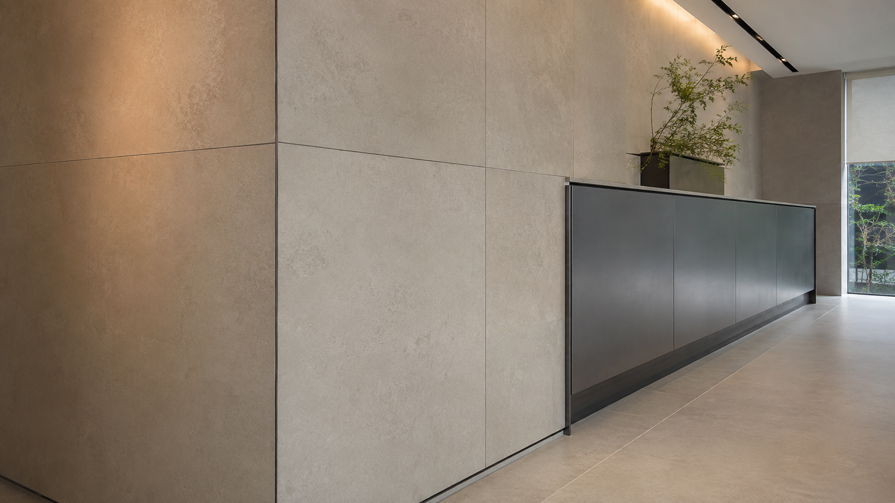
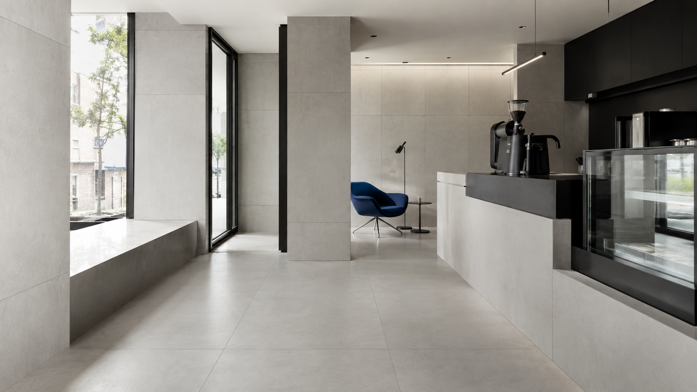

03 / CAPABILITY B
Slab & Wall
슬랩 이음, 코너 프로파일, 가구와 만나는 섀도갭을 하나의 입면으로 정리합니다.

COMMERCIAL TILE ENGINEERING
01 / SITE LOGIC
넓은 바닥과 대형 타일은 작은 오차도 반복되어 드러납니다. 마감부터 시작하지 않고 바탕의 조건, 타일 모듈, 출입구와 가구 기준선을 먼저 확인합니다.
FIELD STANDARD 01—04 ↗
02 / CAPABILITY A

슬랩 이음, 코너 프로파일, 가구와 만나는 섀도갭을 하나의 입면으로 정리합니다.

바닥 전환, 배수, 금속 프로파일처럼 하자가 먼저 드러나는 접점을 가까이 확인합니다.
05 / CHECK SYSTEM
들뜸과 단차에 영향을 주는 바탕 상태
출입구와 시선에서 시작하는 배치 기준
빛이 닿아도 안정적으로 이어지는 표면
줄눈·모서리·이질재가 만나는 마감
06 / VERIFIED WORK ONLY
07 / SITE REQUEST